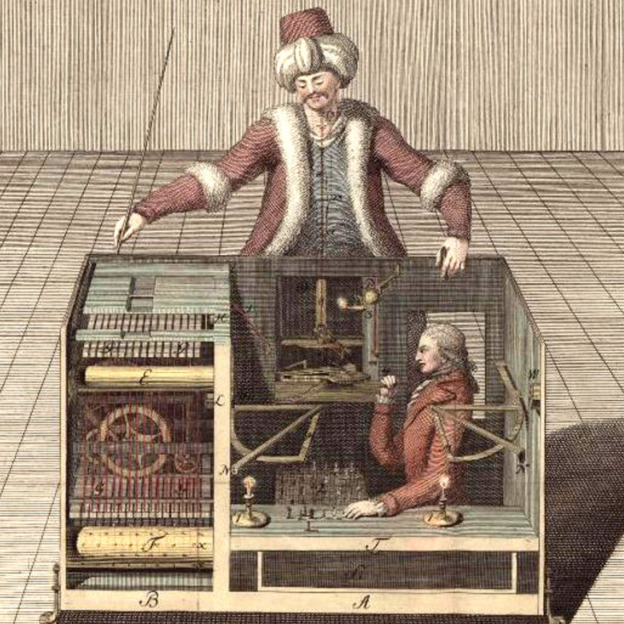
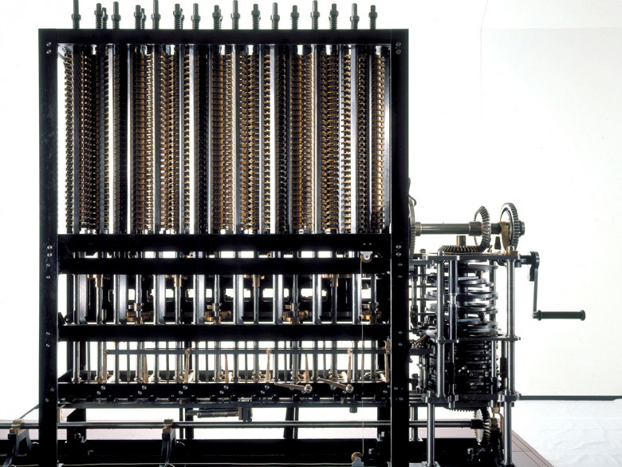
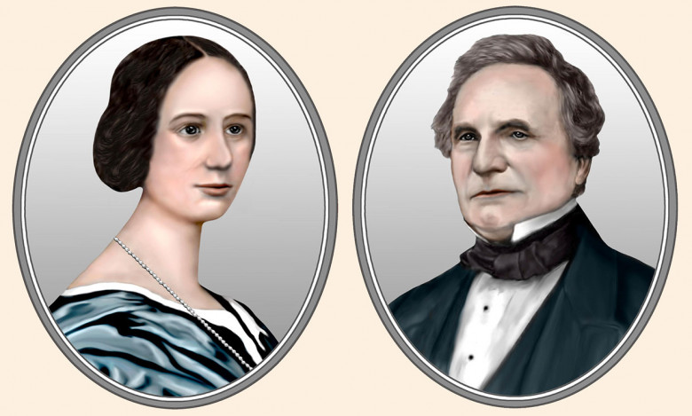
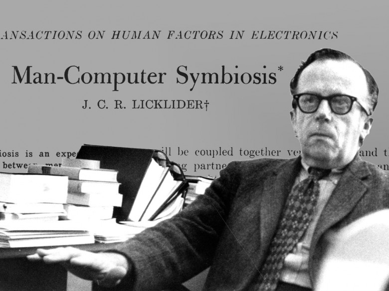
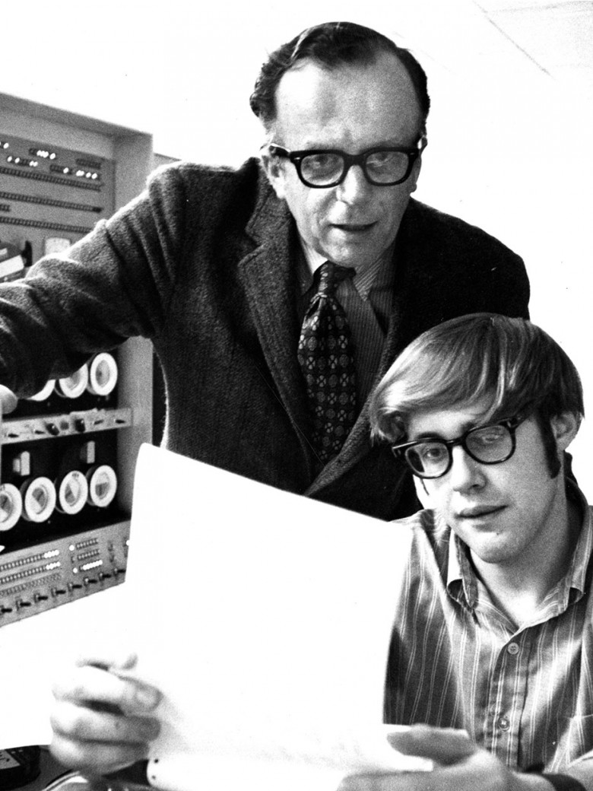

Историю ИИ часто рассказывают, как историю машин, постепенно становящихся умнее. Но в рассказе теряется человеческий фактор, вопрос проектирования и обучения машин, и то, как они появляются, благодаря усилиям человека, умственным и физическим.
Давайте с вами изучим эту, человеческую историю ИИ – то, как инноваторы, мыслители, работники, а иногда и спекулянты создавали алгоритмы, способные воспроизводить человеческую мысль и поведение (или делать вид, что их воспроизводят). Идея о сверхразумных компьютерах, не требующих человеческого участия, может быть захватывающей – но истинная история умных машин показывает, что наш ИИ настолько хорош, насколько хороши мы сами.
В 1770 году при дворе австрийской императрицы Марии Терезии, изобретатель Вольфганг фон Кемпелен продемонстрировал машину, играющую в шахматы. «Турок», как назвал Кемпелен своё изобретение, представлял собой человеческую фигуру в натуральную величину, вырезанную из кедра [по другим источникам – восковую / прим. перев.], одетую, как представитель оттоманской империи, сидящий за деревянным шкафчиком, на столешнице которого находилась шахматная доска.
Кемпелен заявлял, что его машина способна победить любого придворного, и этот вызов принял один из советников Марии Терезии. Кемпелен открыл дверцы шкафа, демонстрируя механизм, похожий на часовой – сложную сеть из рычагов и шестерёнок, а потом вставил в машину ключ и завёл её. Автомат ожил, и поднял деревянную руку, чтобы передвинуть первую фигуру. В течение 30 минут он победил своего соперника.
Турок произвёл сенсацию. В следующие десять лет Кемпелен выступал со своей шахматной машиной по Европе, побеждая многих умнейших людей того времени, включая Бенджамина Франклина и Фридриха II. После смерти Кемпелена в 1804, Турка приобрёл Иоганн Непомук Мельцель, студент немецкого университета и конструктор музыкальных инструментов, продолживший выступления по всему миру.
Одним из тех, кому было позволено рассмотреть машину подробнее, был Чарльз Бэббидж, знаменитый британский инженер и математик. В 1819 году Бэббидж дважды играл с Турком и оба раза проиграл. Согласно историку Тому Стэндеджу, написавшему подробную историю Турка, Бэббидж подозревал, что автомат был не умной машиной, а всего лишь хитроумной мистификацией, и что в нём скрывался человек, управляющий движениями Турка изнутри.

Бэббидж оказался прав. За ширмой механизма турка скрывалось следующее: Кемпелен и Мельцель нанимали гроссмейстеров, чтобы они скрытно сидели внутри большого ящика. Гроссмейстер мог видеть происходящее на доске благодаря магнитам, дававшим зеркальное отображение расставленных фигур.
Для управления рукой Турка скрытый игрок использовал пантограф – систему блоков, синхронизировавшую движения его руки с деревянным Турком. Игрок передвигал рычаг по магнитной доске, вращал его, чтобы разомкнуть и сомкнуть пальцы Турка, а затем передвигал фигуру на нужное место. Помещение, где сидел гроссмейстер, содержало несколько сдвижных панелей и стул на колёсиках, двигавшийся по смазанным рельсам, что позволяло ему передвигаться вперёд и назад, когда Мельцель открывал ящик для всеобщего обозрения.
И хотя Бэббидж подозревал о подобных фокусах, он не стал тратить время на разоблачения, как многие его современники. Однако его встреча с Турком, судя по всему, определила его мышление на долгие годы.

Чарльз Бэббидж разработал разностную машину №2 с 1847 по 1849 годы, но при его жизни она не была построена.
Вскоре после этого он начал работу над автоматическим механическим калькулятором под названием "разностная машина", которую намеревался использовать для создания безошибочных логарифмических таблиц. Первый проект машины, которая могла бы весить 4 тонны, содержал 25 000 металлических составных частей. В 1830-е он отказался от него, начав работу над ещё более сложным механизмом, «аналитической машиной». У неё было «хранилище» и «мельница», работавшие, как память и процессор, а также способность интерпретировать программные инструкции, содержавшиеся на перфокартах.
Изначально Бэббидж рассчитывал, что аналитическая машина будет работать просто как улучшенная версия разностной. Но его соратник, Ада Лавлейс, поняла, что программируемость машины позволяет ей функционировать в более обобщённом режиме. Она заявила, что такая машина породит новый тип «поэтической науки», и математики будут обучать машину выполнять задачи, программируя её. Она даже предсказала, что машина сможет сочинять «сложные научные музыкальные произведения».

Ада Лавлейс и Чарльз Бэббидж
Бэббидж в итоге согласился с Лавлейс, и представил, как потенциал машины общего назначения, способной не только на перемалывание чисел, сможет изменить мир. Естественно, его мысли вернулись ко встрече с Турком. В 1864 году он писал в дневнике о своём желании использовать «механическую запись» для решения совершенно новых задач. «После серьёзных размышлений, для моего испытания я выбрал хитроумную машину, способную успешно играть в интеллектуальную игру, такую, как шахматы».
Хотя технически Турок и машина Бэббиджа никак не связаны, возможность существования машинного интеллекта, воплощённая в мистификации фона Кемпелена, судя по всему, вдохновила Бэббиджа на размышления о машинах в совершенно новом свете. Как позднее писал его соратник, Дэвид Брюстер: «Эти автоматические игрушки, когда-то развлекавшие простолюдинов, сейчас вовлечены в увеличение возможностей и развитие цивилизации нашего вида».
Встреча Бэббиджа с турком в самом начале вычислительной истории служит напоминанием о том, что шумиха и инновации иногда идут рука об руку. Но она учит нас и ещё одному: интеллект, приписываемый машинам, почти всегда основывается на скрытых человеческих достижениях.

14 февраля 1946 года журналисты собрались в инженерной школе Мура в Пенсильванском университете, чтобы понаблюдать открытую демонстрацию одного из первых электронных цифровых компьютеров общего назначения в мире: ENIAC (электронный числовой интегратор и вычислитель).
Артур Бёркс, математик и главный инженер команды ENIAC, заведовал демонстрацией возможностей машины. Сначала он поручил компьютеру сложить 5000 чисел, что было проделано за 1 секунду. Потом он продемонстрировал, как машина может вычислить траекторию снаряда быстрее, чем самому снаряду потребовалось бы, чтобы пролететь от пушки до цели.
Репортёры были поражены. Им казалось, что Бёрксу нужно лишь нажать на кнопку, и машина оживёт, чтобы подсчитать за пару мгновений то, на что у людей ранее уходили дни.
Чего они не знали, или что было скрыто при демонстрации, так это то, что за кажущимся интеллектом машины стояла тяжёлая и передовая работа команды программистов, состоявшей из шести женщин, раньше работавших «вычислителями».
План по постройке машины, способной рассчитывать траекторию снарядов, родился в ранние годы Второй мировой войны. Инженерная школа Мура работала с баллистической исследовательской лабораторией (BRL), где команда из 100 тренированных «вычислителей-людей» вручную подсчитывали артиллерийские таблицы стрельбы.

Задача требовала хорошего уровня знаний в математике, включая умение решать нелинейные дифференциальные уравнения, дифференциальные анализаторы и логарифмические линейки. Но при этом вычисления считались канцелярской работой, задачей слишком нудной для того, чтобы ею занимались инженеры-мужчины. Поэтому BRL нанимала женщин – в основном имевших университетские дипломы и склонность к математике – для этой работы.
С течением войны способность предсказывать траекторию полёта снарядов всё сильнее связывалась с военной стратегией, и от BRL всё активнее требовали результатов.
В 1942 году физик Джон Моучли написал служебную записку с предложением создать программируемый электронный калькулятор общего назначения, способный автоматизировать вычисления. К июню 1943 Моучли совместно с инженером Дж. Преспером Экертом получили финансирование на постройку ENIAC.
Целью электронного компьютера была замена сотен людей-вычислителей из BRL, а также повышение скорости и эффективности вычислений. Однако Моучли и Экерт поняли, что их новую машину нужно будет программировать на вычисление траекторий при помощи перфокарт, используя технологию, которая IBM применяла для своих машин уже несколько десятилетий.
Адель и Герман Голдштайн, семейная пара, руководившая работой людей-вычислителей в BRL, предложила, чтобы этой работой занимались наиболее сильные математики из их коллектива. Они выбрали шестерых – Кэтлин Макналти, Франсис Билас, Бетти Джин Дженнингс, Рут Лихтерман, Элизабет Шнайдер и Мэрлин Весков – и повысили их из людей-вычислителей до операторов.
Их первой задачей было досконально познакомиться с ENIAC. Они изучали чертежи машины, чтобы понять её электронные схемы, логику и физическую структуру. Учиться было чему: 30-тонное чудище занимало порядка 140 кв. м., использовало более 17 000 электронных ламп, 70 000 резисторов, 10 000 конденсаторов, 1500 реле и 6000 ручных переключателей. Команда из шести операторов отвечала за настройку и монтаж машины на проведение определённых вычислений, работу с оборудованием, обслуживающим перфокарты, и поиск ошибок в работе. Для этого операторам иногда приходилось забираться внутрь машины и заменять отказавшую электронную лампу или проводок.

Их первой задачей было досконально познакомиться с ENIAC. Они изучали чертежи машины, чтобы понять её электронные схемы, логику и физическую структуру. Учиться было чему: 30-тонное чудище занимало порядка 140 кв. м., использовало более 17 000 электронных ламп, 70 000 резисторов, 10 000 конденсаторов, 1500 реле и 6000 ручных переключателей. Команда из шести операторов отвечала за настройку и монтаж машины на проведение определённых вычислений, работу с оборудованием, обслуживающим перфокарты, и поиск ошибок в работе. Для этого операторам иногда приходилось забираться внутрь машины и заменять отказавшую электронную лампу или проводок.
Однако вклад женщин-программистов получил очень мало признания или благодарностей. В частности потому, что программирование машины всё ещё тесно связывалось с ручными вычислениями, и поэтому считалось не совсем профессиональной работой, пригодной разве что для женщин. Ведущие инженеры и физики концентрировались на разработке и создании железа, которое они считали более важным для будущего компьютеров.
ENIAC не успели закончить вовремя для расчёта полётов снарядов во время войны. Но вскоре её мощность задействовал Джон фон Нейман для расчётов ядерного синтеза. Для этого требовалось использовать более миллиона перфокарт. Физики из Лос-Аламоса целиком полагались на навыки программирования операторов, поскольку только им было известно, как можно обработать такое большое количество операций.
Однако вклад женщин-программистов получил очень мало признания или благодарностей. В частности потому, что программирование машины всё ещё тесно связывалось с ручными вычислениями, и поэтому считалось не совсем профессиональной работой, пригодной разве что для женщин. Ведущие инженеры и физики концентрировались на разработке и создании железа, которое они считали более важным для будущего компьютеров.

Поэтому, когда ENIAC, наконец, представили прессе в 1946, шесть женщин-операторов остались скрытыми от глаз общественности. Наступала заря Холодной войны, и американские военные охотно демонстрировали своё технологическое превосходство. Представляя ENIAC как автономную умную машину, инженеры рисовали образ технологического превосходства, скрывая использовавшийся людской труд.
Тактика сработала, и повлияла на освещение работы компьютеров в СМИ в последовавшие десятилетия. В новостях об ENIAC, распространившихся по всему миру, машина занимала основное внимание, и получала такие эпитеты, как «электронный мозг», «волшебник» и «мозг робота, созданный человеком».
Тяжёлая и кропотливая работа шести женщин-операторов, ползавших внутри машины, заменяя проводки и лампы, чтобы машина могла совершать свои «разумные» действия, освещалась крайне мало.
В 1950 году, на заре цифровой эпохи, Алан Тьюринг опубликовал статью, которой впоследствии суждено стать самой известной из его работ, "Вычислительные машины и разум", в которой он поставил вопрос: «Могут ли машины мыслить?»
Вместо того, чтобы пытаться определить понятие «машина» и «мышление», Тьюринг описывает иной метод поиска ответа на этот вопрос, вдохновлённый салонной игрой викторианской эпохи – игрой в имитацию. По правилам игры, мужчина и женщина, находящиеся в разных комнатах, беседуют друг с другом, передавая записки через посредника. Посреднику, играющему также роль судьи, нужно догадаться, кто из них мужчина, а кто – женщина, а его задача усложняется тем, что мужчина пытается имитировать женщину.
Вдохновившись этой игрой, Тьюринг разработал мысленный эксперимент, в котором один из участников заменён компьютером. Если компьютер можно запрограммировать так, чтобы он играл в имитацию настолько хорошо, что судья не смог бы отличить, говорит о нс машиной или человеком, тогда разумно было бы заключить, утверждал Тьюринг, что машина обладает интеллектом.
Этот мысленный эксперимент стал известен, как тест Тьюринга, и по сей день остаётся одной из наиболее известных и спорных идей в ИИ. Он не теряет своей привлекательности, поскольку даёт недвусмысленный ответ на очень философский вопрос: «Могут ли машины мыслить?» Если компьютер проходит тест Тьюринга, тогда ответ «да». Как писал философ Дэниел Деннет, тест Тьюринга должен был прекращать философские дебаты. «Вместо того, чтобы бесконечно спорить о природе и сути мышления, — пишет Деннет, — почему бы нам не сойтись на том, что какой бы ни была эта природа, всё, что сможет пройти этот тест, без сомнения обладает ею».
Однако более тщательное прочтение работы Тьюринга открывает небольшую деталь, вносящую небольшую двусмысленность в тест, говорящую о том, что, возможно, Тьюринг имел в виду не практическую проверку машины на наличие разума, а философскую провокацию.
В одной из частей работы Тьюринг приводит симуляцию того, как мог бы выглядеть тест с использованием воображаемого разумного компьютера будущего. Человек задаёт вопросы, а компьютер отвечает.
В: Напишите, пожалуйста, сонет о мосте через Форт.
О: Тут я вынужден отказаться. У меня никогда не получались стихи.
В: Сложите 34957 и 70764.
О: (дать ответ после 30-секундной паузы): 105621.
В: Вы играете в шахматы?
О: Да.
В: Мой король стоит на e1; других фигур у меня нет. Ваш король на e3, а ладья на a8. Ваш ход. Как вы пойдете?
О: (Подумав секунд пятнадцать): Ла1, мат.
В данной беседе компьютер сделал арифметическую ошибку. Реальная сумма чисел будет 105721, а не 105621. Вряд ли Тьюринг, гениальный математик, случайно допустил её. Скорее, это пасхалка для внимательного читателя.
В другом месте статьи Тьюринг, судя по всему, намекает на то, что эта ошибка является трюком программиста, призванным обмануть судью. Тьюринг понимал, что если внимательные читатели ответов компьютера увидят ошибку, они решат, что беседуют с человеком, предполагая, что машина не допустит подобной ошибки. Тьюринг писал, что машину можно запрограммировать на «намеренное включение ошибок в ответы, рассчитанное на то, чтобы запутать допрашивающего».
И если идею использования ошибок для намёка на человеческий разум было трудно постичь в 1950-х, сегодня она стала практикой проектирования для программистов, работающих с обработкой естественных языков. К примеру, в июне 2014 года чатбот Женя Густман стал первым компьютером, прошедшим тест Тьюринга. Однако критики указали, что Жене удалось это сделать только благодаря встроенному трюку: он симулировал 13-летнего мальчика, у которого английский был не родным языком. Это означало, что его ошибки в синтаксисе и грамматике, а также неполнота знаний были ошибочно отнесены на счёт наивности и незрелости, вместо неспособности обработки естественных языков.
Точно так же, после того, как голосовой помощник Duplex от Google поразил публику своими паузами в разговоре и использованием заполняющих их звуков, многие указали, что такое поведение было не результатом мышления системы, а специально запрограммированным действием, призванным симулировать процесс мышления человека.
Оба случая реализуют идею Тьюринга о том, что компьютеры можно специально заставлять делать ошибки, чтобы произвести впечатление человека. Как и Тьюринг, программисты Жени Густмана и Duplex понимали, что поверхностная имитация несовершенства человека способна обмануть нас.
Возможно, тест Тьюринга оценивает не наличие разума у машины, а нашу готовность считать её разумной. Как сказал сам Тьюринг: «Идея разума сама по себе больше эмоциональная, чем математическая. То, насколько разумным мы считаем поведение чего-либо, определяется не в меньшей степени нашим собственным состоянием разума и навыками, чем свойствами рассматриваемого объекта».
И, возможно, разум – это не некая субстанция, которую можно запрограммировать у машины, — что, видимо, имел в виду Тьюринг, — а особенность, проявляющаяся через социальное взаимодействие.

В 10:30 29 октября 1969 года аспирант Калифорнийского университета в Лос-Анджелесе отправил сообщение, состоявшее из двух букв, с компьютера SDS Sigma 7 на другую машину, расположенную в нескольких сотнях километров, в Стэнфордском исследовательском институте в Менло-Парк.
Сообщение гласило: «LO».
Аспирант хотел написать «LOGIN», но сеть обмена пакетами, поддерживавшая передачу сообщения, ARPANET, упала до того, как удалось написать всё сообщение.
В истории интернета этот момент отмечается как начало новой эпохи онлайн-коммуникаций. Но часто забывают, что в основе технической инфраструктуры ARPANET лежала радикальная идея о будущем симбиозе человека и компьютера, разработанная человеком по имени Джозеф Карл Робнетт Ликлайдер.
Ликлайдер, имевший психологическое образование, заинтересовался компьютерами в конце 1950-х, работая в небольшой консалтинговой компании. Его интересовало, как эти машины могли бы усилить совместный разум человечества, и он начал проводить исследования в активно развивавшейся области ИИ. Изучив существовавшую тогда литературу, он обнаружил, что программисты намереваются «научить» машины выполнять определённые действия за человека, типа игры в шахматы или перевода текстов, причём с большей эффективностью и качеством, чем люди.
Такая концепция машинного интеллекта не устраивала Ликлайдера. С его точки зрения проблема заключалась в том, что существующая парадигма считала людей и машин интеллектуально эквивалентными существами. Ликлайдер же считал, что на самом деле люди и машины фундаментально различны по своим когнитивным возможностям и сильным сторонам. Люди хорошо справляются с определёнными разумными задачами – типа творчества или вынесения суждений – а компьютеры с другими, типа запоминания данных и быстрой их обработки.
Вместо того, чтобы заставлять компьютеры имитировать интеллектуальную деятельность людей, Ликлайдер предложил совместную работу людей и машин, в которой каждая сторона использует свои сильные стороны. Он предположил, что такая стратегия перейдёт от соревнований (типа игры в шахматы людей с компьютерами) к немыслимым ранее формам интеллектуальной деятельности.
В работе 1960 года "Симбиоз машины и человека" Ликлайдер описал эту свою идею. «Надеюсь, что довольно скоро мозг человека и вычислительные машины окажутся тесно связанными друг с другом, и что получившееся партнёрство сможет размышлять так, как не мог никакой мозг, и обрабатывать данные так, как не обрабатывали их современные машины». Для Ликлайдера многообещающим примером такого симбиоза была система из компьютеров, сетевого оборудования и людей-операторов, известная, как «полуавтоматическое наземное окружение», или SAGE, открывшееся за два года до этого с целью отслеживания воздушного пространства США.
В 1963 году Ликлайдер устроился работать директором управления передовых исследовательских проектов (тогда называвшегося ARPA, а сейчас – DARPA), где у него была возможность реализовать некоторые из своих идей. В частности, ему было интересно разрабатывать и внедрять то, что он сначала назвал "межгалактической компьютерной сетью".
Идея появилась у него, когда он осознал, что в ARPA необходимо изобрести эффективный метод обновления данных, связанных с языками программирования и техническими протоколами, доступных разбросанным далеко друг от друга командам, состоящим из людей и машин. Решением этой задачи была сеть связи, объединяющая эти команды на больших расстояниях. Проблемы объединения их в сеть были схожи с проблемами, над которыми размышляли фантасты, как указывал он в описывающей эту концепцию докладной записке: «Как начать общение между совершенно не связанными друг с другом разумными существами?»
Ликлайдер ушёл из ARPA до того, как стартовала программа разработки этой сети. Но в последующие пять лет его возвышенные идеи стали неотъемлемой частью разработки ARPANET. И по мере того, как ARPANET превращалась в то, что нам известно сегодня, как интернет, некоторые начали видеть, что этот новый метод общения представляет собой совместную работу человеческих и технологических сущностей, симбионта, который иногда ведёт себя, как сказал бельгийский кибернетик Фрэнсис Хайлайен, как «глобальный мозг».

Сегодня многие существенные прорывы в деле применения машинного обучения основываются на совместной работе людей и машин. К примеру, индустрия грузоперевозок всё активнее ищет способы, позволяющие водителям-людям и вычислительным системам использовать их сильные стороны для повышения эффективности доставки. Также в области перевозок Uber разработала систему, в которой людям даются задачи, требующие хороших навыков вождения, типа въезда и съезда с шоссе, а машинам остаются часы рутинной езды по шоссе.
Хотя существуют и многие другие примеры симбиоза человека и машины, культурная тенденция представлять себе машинный разум в виде некоего отдельного суперкомпьютера с разумом человеческого уровня пока ещё достаточно сильна. Но на самом деле будущее киборгов, которое представлял себе Ликлайдер, уже наступило: мы живём в мире симбиоза машин и людей, который он описывал, как «совместная жизнь в близкой связи, или даже в союзе двух разных организмов». Вместо того, чтобы концентрироваться на страхе того, что людей заменят машины, наследие Ликлайдера напоминает нам о возможностях совместной работы с ними.
В 1970-е доктор Джоффри Франглен из Медицинской школы госпиталя св. Георга в Лондоне начал писать алгоритм для отсева заявок абитуриентов на поступление.
В то время три четверти из 2500 человек, подававших вступительные заявки ежегодно, отсеивались специальными людьми, оценивавшими их письменное заявление, в результате чего абитуриенты не доходили до стадии интервью. Примерно 70% людей, прошедших первичный отсев, поступали в медицинскую школу. Поэтому первоначальный отсев был крайне важным этапом.
Франглен был заместителем декана и тоже занимался отсевом заявок. Чтение заявок требовало прорву времени, и ему казалось, что этот процесс можно автоматизировать. Он изучал технику отсева студентов, которой пользовались он и другие аттестаторы, а потом написал программу, которая, как он говорил, «имитировала поведение людей-аттестаторов».
Основной мотивацией Франглена было повышение эффективности процесса принятия, а ещё он надеялся, что его алгоритм устранит непостоянное качество работы персонала. Он надеялся, что передав этот процесс технической системе, можно будет добиться абсолютно одинаковой оценки всех абитуриентов, и создать честный процесс отсева.
На самом деле всё получилось наоборот.
Франглен завершил свой алгоритм в 1979-м. В том году заявки абитуриентов проверяли параллельно компьютер и люди. Франглен обнаружил, что его система соглашалась с оценками аттестаторов в 90-95% случаях. Администрация решила, что эти цифры позволяют заменить чиновников алгоритмом. К 1982 году все первичные заявки на поступление в школу начали оцениваться программой.
Через несколько лет некоторые сотрудники обеспокоились отсутствием разнообразия среди поступивших студентов. Они провели внутреннее расследование программы Франглена и обнаружили определённые правила, оценивавшие абитуриентов по, казалось бы, не имеющих к этому отношения факторам, типа места рождения или имени. Однако Франглен убедил комитет, что эти правила были собраны на основании сбора данных по работе аттестаторов, и не сильно влияют на выборку.
В декабре 1986 года два лектора школы узнали об этом внутреннем расследовании и отправились в британскую комиссию по расовому равноправию. Они сообщили комиссии, что у них были основания считать, что компьютерная программа использовалась для скрытой дискриминации женщин и цветных.
Комиссия начала расследование. Было обнаружено, что алгоритм разделял кандидатов на европеоидов и неевропеоидов, на основе их имён и мест рождения. Если их имена были не европейскими, это шло им в минус. Одно лишь наличие не европейского имени вычитало 15 очков из общей суммы абитуриента. Комиссия также обнаружила, что женщин в среднем недооценивали на 3 очка. На основе этой системы ежедневно отклонялись до 60 заявок.
В то время в британских университетах расовая и половая дискриминация были очень сильны – и школу св. Георга поймали на этом только потому, что она доверила эту предвзятость компьютерной программе. Поскольку было доказуемо, что алгоритм ниже оценивал женщин и людей с неевропейскими именами, комиссия получила твёрдые доказательства наличия дискриминации.
Медицинскую школу обвинили в дискриминации, однако она отделалась достаточно легко. Пытаясь загладить вину, колледж связался с людьми, которых могли неправомерно дискриминировать, и троим из отвергнутых абитуриентов предложили обучение в школе. Комиссия отметила, что проблема в медицинской школе была не только технической, но и культурной. Многие сотрудники относились к алгоритму сортировки как к истине в последней инстанции, и не тратили время на то, чтобы выяснить, как она сортирует абитуриентов.
На более глубоком уровне ясно, что алгоритм поддерживал предубеждения, уже существовавшие в системе приёма абитуриентов. Франглен ведь проверял машину при помощи людей и обнаружил совпадение в 90-95%. Однако закодировав в машину дискриминацию, имевшуюся у аттестаторов, он обеспечил бесконечное повторение этой предвзятости.
Дело о дискриминации в школе св. Георга привлекло много внимания. В итоге комиссия запретила включать информацию о расе и этнической принадлежности в заявления абитуриентов. Однако этот скромный шаг не остановил распространение алгоритмической предвзятости.
Алгоритмические системы принятия решений всё чаще развёртывают в областях с высокой степенью ответственности, например, в здравоохранении и уголовном судопроизводстве, и повторения, а также усиления существующей социальной предвзятости, вытекающей из исторических данных, вызывает серьёзное беспокойство. В 2016 году журналисты из ProPublica показали, что ПО, используемое в США для предсказания будущих преступлений, предвзято относилось к афроамериканцам. Позднее исследователь Джой Буламвини показал, что ПО для распознавания лиц от Amazon сильнее ошибается в случае темнокожих женщин.
И хотя машинная предвзятость быстро становится самой обсуждаемой темой в ИИ, алгоритмы до сих пор считаются загадочными и неоспоримыми математическими объектами, выдающими разумные и непредвзятые результаты. Как говорит критик ИИ Кэйт Кроуфорд, пора признать, что алгоритмы являются «созданиями людей», и наследуют нашу предвзятость. Культурный миф о неоспоримом алгоритме часто скрывает этот факт: наш ИИ хорош настолько, насколько хороши мы сами.

На рубеже тысячелетия Amazon начал расширять свои услуги за пределы продажи книг. С ростом количества различных категорий продуктов на сайте компании нужно было придумывать новые способы их организации и категоризации. Частью этой задачи было удаление десятков тысяч дублирующихся продуктов, появлявшихся на сайте.
Программисты попытались сделать программу, способную автоматически устранять дубликаты. Определение и удаление объектов казалось простой задачей, доступной машине. Однако программисты вскоре сдались, назвав задачу по обработке данных "невыполнимой". Для задачи, предполагавшей способность замечать мелкие несоответствия или сходство в изображениях и текстах, требовался человеческий интеллект.
Amazon столкнулась с проблемой. Удаление дублировавшихся продуктов было тривиально для людей, но огромное количество предметов потребовало бы значительной рабочей силы. Управлять работниками, занятыми одной такой задачей, было бы нетривиально.
Менеджер компании Венки Харинарайян придумал решение. Его патент описывает «гибридное вычислительное сотрудничество человека и машины», разбивающее задачу на небольшие отрезки, подзадачи, и распространяющее их по сети сотрудников-людей.
В случае удаления дубликатов основной компьютер может разделить сайт Amazon на небольшие секции – допустим, 100 страниц открывашек – и отправлять секции людям по интернету. Им затем необходимо было определять дубликаты внутри этих секций и отправлять кусочки головоломки обратно.
Распределённая система предлагала критически важное преимущество: работникам не надо было скапливаться в одном месте, они могли выполнять свои подзадачи на своих компьютерах, где бы они ни были, и когда хотели. По сути, Харинарайян придумал эффективный способ распределения низкоквалифицированной, но сложной для автоматизации работы, по широкой сети людей, которые могут работать параллельно.
Этот метод оказался настолько эффективным для внутренних работ компании, что Джефф Безос решил продавать систему в виде услуги для сторонних организаций. Безос превратил технологию Харинарайяна в рынок для рабочих. Там предприятия, у которых были задачи, лёгкие для людей (но тяжёлые для роботов), могли найти себе сеть работников-фрилансеров, выполняющих эти задачи за небольшое вознаграждение.
Так появился Amazon Mechanical Turk, или сокращённо mTurk. Сервис запустился в 2005-м, и база пользователей начала быстро расти. Предприятия и исследователи всего мира начали закачивать т.н. «задачи для человеческого интеллекта» на платформу, такие, как расшифровка аудио или проставление меток для изображений. Задачи выполнялись межнациональной и анонимной группой рабочих за небольшую плату (один расстроенный работник жаловался, что среднее вознаграждение составляет 20 центов).
Название нового сервиса отсылало к машине XVIII века, играющей в шахматы – Механическому Турку, изобретённому мелким предпринимателем Вольфгангом фон Кемпеленом. И точно так же, как в той поддельной автоматизации, внутри которой сидел человек, игравший в шахматы, платформа mTurk была разработана для сокрытия человеческого труда. Вместо имён работники платформы имеют номера, а общение между работодателем и рабочим лишено персонализации. Сам Безос называл этих расчеловеченных работников "искусственным искусственным интеллектом".
Сегодня mTurk – процветающий рынок с сотнями тысяч работников со всего мира. И хотя платформа даёт источник дохода людям, у которых, возможно, нет доступа к другой работе, условия труда там весьма сомнительные. Некоторые критики утверждают, что спрятав и разделив работников, Amazon облегчает задачу их эксплуатации. В исследовательской работе от декабря 2017 года было обнаружено, что медианная зарплата работника составляет около $2 в час, и лишь 4% работников зарабатывают более $7,25 в час.
Интересно, что mTurk стал критически важным сервисом для разработки машинного обучения. В МО программе выдаётся большой набор данных, на котором она обучается искать закономерности и делать выводы. Работников mTurk часто используют для создания и разметки этих наборов, при этом их роль в развитии МО часто остаётся в тени.
Имеющая место динамика между ИИ-сообществом и mTurk соответствует той, что присутствовала в течение всей истории машинного разума. Мы охотно восхищаемся внешним видом автономных «разумных машин», игнорируя или намеренно скрывая человеческий труд, их создающий.
Возможно, мы можем извлечь урок из замечаний Эдгара Аллана По. Когда он изучил Механического Турка фон Кемпелена, то не поддался на эту иллюзию. Вместо этого он размышлял, каково спрятанному шахматисту было сидеть внутри этой коробки, «втиснутому» среди шестерёнок и рычагов в «болезненной и неестественной позе».
В настоящий момент, когда заголовки о прорывах ИИ усеивают новостное поле, важно помнить трезвый подход По. Может быть весьма увлекательно – пусть и опасно – поддаваться шумихе вокруг ИИ и чрезмерно увлекаться идеями машин, которым не требуются простые смертные. Однако при тщательном рассмотрении вы сможете увидеть следы человеческого труда.